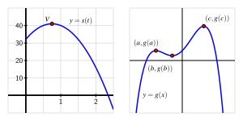
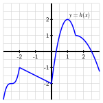
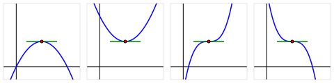
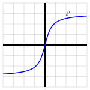

Section3.1Using derivatives to identify extreme values
Motivating Questions
What are the critical numbers of a function \(f\) and how are they connected to identifying the most extreme values the function achieves?
How does the first derivative of a function reveal important information about the behavior of the function, including the function’s extreme values?
How can the second derivative of a function be used to help identify extreme values of the function?
In many different settings, we are interested in knowing where a function achieves its least and greatest values. These can be important in applications — say to identify a point at which maximum profit or minimum cost occurs — or in theory to characterize the behavior of a function or a family of related functions.
Consider the simple and familiar example of a parabolic function such as \(s(t) = -16t^2 + 24t + 32\) (shown at left in Figure 3.1.1) that represents the height of an object tossed vertically: its maximum value occurs at the vertex of the parabola and represents the greatest height the object reaches. This maximum value is an especially important point on the graph, the point at which the curve changes from increasing to decreasing.

Figure3.1.1.At left, \(s(t) = -16t^2 + 24t + 32\) whose vertex is \((\frac{3}{4}, 41)\text{;}\) at right, a function \(g\) that demonstrates several high and low points.
Definition3.1.2.
Given a function \(f\text{,}\) we say that \(f(c)\) is a global or absolute maximum of \(f\) provided that \(f(c) \ge f(x)\) for all \(x\) in the domain of \(f\text{,}\) and similarly we call \(f(c)\) a global or absolute minimum of \(f\) whenever \(f(c) \le f(x)\) for all \(x\) in the domain of \(f\text{.}\)
For instance, on the right in Figure 3.1.1, \(g\) has a global maximum of \(g(c)\text{,}\) but \(g\) does not appear to have a global minimum, as the graph of \(g\) seems to decrease indefinitely. Note that the point \((c,g(c))\) marks a fundamental change in the behavior of \(g\text{,}\) where \(g\) changes from increasing to decreasing; similar things happen at both \((a,g(a))\) and \((b,g(b))\text{,}\) although these points are not global minima or maxima.
Definition3.1.3.
We say that \(f(c)\) is a local maximum or relative maximum of \(f\) provided that \(f(c) \ge f(x)\) for all \(x\) near \(c\text{,}\) and \(f(c)\) is called a local or relative minimum of \(f\) whenever \(f(c) \le f(x)\) for all \(x\) near \(c\text{.}\)
For example, on the right in Figure 3.1.1, \(g\) has a relative minimum of \(g(b)\) at the point \((b,g(b))\) and a relative maximum of \(g(a)\) at \((a,g(a))\text{.}\) We have already identified the global maximum of \(g\) as \(g(c)\text{;}\) it can also be considered a relative maximum. Any maximum or minimum may also be called an extreme value of \(f\text{.}\)
We would like to use calculus ideas to identify and classify key function behavior, including the location of relative extremes. Of course, if we are given a graph of a function, it is often straightforward to locate these important behaviors visually.
Preview Activity3.1.1.
Consider the function \(h\) given by the graph in Figure 3.1.4. Use the graph to answer each of the following questions.

Figure3.1.4.The graph of a function \(h\) on the interval \([-3,3]\text{.}\)
Identify all of the values of \(c\) such that \(-3 \lt c \lt 3\) for which \(h(c)\) is a local maximum of \(h\text{.}\)
Identify all of the values of \(c\) such that \(-3 \lt c \lt 3\) for which \(h(c)\) is a local minimum of \(h\text{.}\)
Does \(h\) have a global maximum on the interval \([-3,3]\text{?}\) If so, what is the value of this global maximum?
Does \(h\) have a global minimum on the interval \([-3,3]\text{?}\) If so, what is its value?
Identify all values of \(c\) for which \(h'(c) = 0\text{.}\)
Identify all values of \(c\) for which \(h'(c)\) does not exist.
True or false: every relative maximum and minimum of \(h\) on the interval \(-3 \lt x \lt 3\) occurs at a point \(c\) such that where \(h'(c)\) is either zero or does not exist.
True or false: at every point where \(h'(c)\) is zero or does not exist on the interval \(-3 \lt x \lt 3\text{,}\)\(h\) has a relative maximum or minimum.
Subsection3.1.1Critical numbers and the first derivative test
Figure3.1.5.From left to right, a function with a relative maximum where its derivative is zero; a function with a relative maximum where its derivative is undefined; a function with neither a maximum nor a minimum at a point where its derivative is zero; a function with a relative minimum where its derivative is zero; and a function with a relative minimum where its derivative is undefined.
As seen in Figure 3.1.5, when a continuous function defined on \((a,b)\) changes from being always increasing on interval \((a,c)\) to being always decreasing on interval \((c, b)\) (where \(a \lt c \lt b\)), the function has a relative maximum at \(c\text{.}\) Similarly, when a continuous function defined on \((a,b)\) changes from being always decreasing on interval \((a,c)\) to being always increasing on interval \((c, b)\text{,}\) the function has a relative minimum at \(c\text{.}\) Because the sign of the derivative changes at such locations, there are only two possible ways for these changes in behavior to occur: either \(f'(c) = 0\) or \(f'(c)\) is undefined. Because these values of \(c\) are so important, we call them critical numbers.
Definition3.1.6.
We say that a function \(f\) has a critical number at \(x = c\) provided that \(c\) is in the domain of \(f\text{,}\) and either \(f'(c) = 0\) or \(f'(c)\) is undefined.
Critical numbers are the only possible locations where the function \(f\) may have relative extremes. Note that not every critical number produces a maximum or minimum; in the middle graph of Figure 3.1.5, the function pictured there has a horizontal tangent line at the noted point, but the function is increasing before and increasing after, so the critical number does not yield a maximum or minimum.
When \(c\) is a critical number, we say that \((c,f(c))\) is a critical point of the function, or that \(f(c)\) is a critical value. The first derivative test summarizes how sign changes in the first derivative (which can only occur at critical numbers) indicate the presence of a local maximum or minimum for a given function.
First Derivative Test.
Let \(p\) be a critical number of a continuous function \(f\) that is differentiable near \(p\) (except possibly at \(x = p\)). If \(f'\) changes sign from positive to negative at \(p\text{,}\) then \(f\) has a relative maximum at \(p\text{.}\) If \(f'\) changes sign from negative to positive at \(p\text{,}\) then \(f\) has a relative minimum at \(p\text{.}\)
In Example 3.1.7, we show how to apply the First Derivative Test to determine whether relative maxima or minima occur at various critical numbers and introduce the idea of a sign chart to visualize important function and derivative behavior.
Example3.1.7.
Let \(f\) be a function whose derivative is given by the formula \(f'(x) = e^{-2x}(3-x)(x+1)^2\text{.}\) Determine all critical numbers of \(f\) and decide whether a relative maximum, relative minimum, or neither occurs at each.
Solution.
Since we already have \(f'(x)\) written in factored form, it is straightforward to find the critical numbers of \(f\text{.}\) Because \(f'(x)\) is defined for all values of \(x\text{,}\) we need only determine where \(f'(x) = 0\text{.}\) From the equation
and the zero product property, it follows that \(x = 3\) and \(x = -1\) are critical numbers of \(f\text{.}\) (There is no value of \(x\) that makes \(e^{-2x} = 0\text{.}\))
Next, to apply the first derivative test, we’d like to know the sign of \(f'(x)\) at inputs near the critical numbers. Because the critical numbers are the only locations at which \(f'\) can change sign, it follows that the sign of the derivative is the same on each of the intervals created by the critical numbers: for instance, the sign of \(f'\) must be the same for every \(x \lt -1\text{.}\) We create a first derivative sign chart to summarize the sign of \(f'\) on the relevant intervals, along with the corresponding behavior of \(f\text{.}\)
Figure3.1.8.The first derivative sign chart for a function \(f\) whose derivative is given by the formula \(f'(x) = e^{-2x}(3-x)(x+1)^2\text{.}\)
To produce the first derivative sign chart in Figure 3.1.8 we identify the sign of each factor of \(f'(x)\) at one selected point in each interval. For instance, for \(x \lt -1\text{,}\) we could determine the sign of \(e^{-2x}\text{,}\)\((3-x)\text{,}\) and \((x+1)^2\) at the value \(x = -2\text{.}\) We note that both \(e^{-2x}\) and \((x+1)^2\) are positive regardless of the value of \(x\text{,}\) while \((3-x)\) is also positive at \(x = -2\text{.}\) Hence, each of the three terms in \(f'\) is positive, which we indicate by writing “\(+++\text{.}\)” Taking the product of three positive terms results in a positive value for \(f'\text{,}\) which we denote by the “\(+\)” in the interval to the left of \(x = -1\text{.}\) And, since \(f'\) is positive on that interval, we know that \(f\) is increasing, so we write “INC” to represent the behavior of \(f\text{.}\) In a similar way, we find that \(f'\) is positive and \(f\) is increasing on \(-1 \lt x \lt 3\text{,}\) and \(f'\) is negative and \(f\) is decreasing for \(x \gt 3\text{.}\)
Now we look for critical numbers at which \(f'\) changes sign. In this example, \(f'\) changes sign only at \(x = 3\text{,}\) from positive to negative, so \(f\) has a relative maximum at \(x = 3\text{.}\) Although \(f\) has a critical number at \(x = -1\text{,}\) since \(f\) is increasing both before and after \(x = -1\text{,}\)\(f\) has neither a minimum nor a maximum at \(x = -1\text{.}\)
Activity3.1.2.
Suppose that \(g(x)\) is a function continuous for every value of \(x \ne 2\) whose first derivative is \(g'(x) = \frac{(x+4)(x-1)^2}{x-2}\text{.}\) Further, assume that it is known that \(g\) has a vertical asymptote at \(x = 2\text{.}\)
Determine all critical numbers of \(g\text{.}\)
By developing a carefully labeled first derivative sign chart, decide whether \(g\) has as a local maximum, local minimum, or neither at each critical number.
Does \(g\) have a global maximum? global minimum? Justify your claims.
What is the value of \(\lim_{x \to \infty} g'(x)\text{?}\) What does the value of this limit tell you about the long-term behavior of \(g\text{?}\)
Sketch a possible graph of \(y = g(x)\text{.}\)
Subsection3.1.2The second derivative test
Recall that the second derivative of a function tells us several important things about the behavior of the function itself. For instance, if \(f''\) is positive on an interval, then we know that \(f'\) is increasing on that interval and, consequently, that \(f\) is concave up, so throughout that interval the tangent line to \(y = f(x)\) lies below the curve at every point. At a point where \(f'(p) = 0\text{,}\) the sign of the second derivative determines whether \(f\) has a local minimum or local maximum at the critical number \(p\text{.}\)

Figure3.1.9.Four possible graphs of a function \(f\) with a horizontal tangent line at a critical point.
In Figure 3.1.9, we see the four possibilities for a function \(f\) that has a critical number \(p\) at which \(f'(p) = 0\text{,}\) provided \(f''(p)\) is not zero on an interval including \(p\) (except possibly at \(p\)). On either side of the critical number, \(f''\) can be either positive or negative, and hence \(f\) can be either concave up or concave down. In the first two graphs, \(f\) does not change concavity at \(p\text{,}\) and in those situations, \(f\) has either a local minimum or local maximum. In particular, if \(f'(p) = 0\) and \(f''(p) \lt 0\text{,}\) then \(f\) is concave down at \(p\) with a horizontal tangent line, so \(f\) has a local maximum there. This fact, along with the corresponding statement for when \(f''(p)\) is positive, is the substance of the second derivative test.
Second Derivative Test.
If \(p\) is a critical number of a continuous function \(f\) such that \(f'(p) = 0\) and \(f''(p) \ne 0\text{,}\) then \(f\) has a relative maximum at \(p\) if and only if \(f''(p) \lt 0\text{,}\) and \(f\) has a relative minimum at \(p\) if and only if \(f''(p) \gt 0\text{.}\)
In the event that \(f''(p) = 0\text{,}\) the second derivative test is inconclusive. That is, the test doesn’t provide us any information. This is because if \(f''(p) = 0\text{,}\) it is possible that \(f\) has a local minimum, local maximum, or neither. 1
Just as a first derivative sign chart reveals all of the increasing and decreasing behavior of a function, we can construct a second derivative sign chart that demonstrates all of the important information involving concavity.
Example3.1.10.
Let \(f(x)\) be a function whose first derivative is \(f'(x) = 3x^4 - 9x^2\text{.}\) Construct both first and second derivative sign charts for \(f\text{,}\) fully discuss where \(f\) is increasing and decreasing and concave up and concave down, identify all relative extreme values, and sketch a possible graph of \(f\text{.}\)
Solution.
Since we know \(f'(x) = 3x^4 - 9x^2\text{,}\) we can find the critical numbers of \(f\) by solving \(3x^4 - 9x^2 = 0\text{.}\) Factoring, we observe that
so that \(x = 0, \pm\sqrt{3}\) are the three critical numbers of \(f\text{.}\) The first derivative sign chart for \(f\) is given in Figure 3.1.11.
Figure3.1.11.The first derivative sign chart for \(f\) when \(f'(x) = 3x^4 - 9x^2 = 3x^2(x^2-3)\text{.}\)
We see that \(f\) is increasing on the intervals \((-\infty, -\sqrt{3})\) and \((\sqrt{3}, \infty)\text{,}\) and \(f\) is decreasing on \((-\sqrt{3},0)\) and \((0, \sqrt{3})\text{.}\) By the first derivative test, this information tells us that \(f\) has a local maximum at \(x = -\sqrt{3}\) and a local minimum at \(x = \sqrt{3}\text{.}\) Although \(f\) also has a critical number at \(x = 0\text{,}\) neither a maximum nor minimum occurs there since \(f'\) does not change sign at \(x = 0\text{.}\)
Next, we move on to investigate concavity. Differentiating \(f'(x) = 3x^4 - 9x^2\text{,}\) we see that \(f''(x) = 12x^3 - 18x\text{.}\) Since we are interested in knowing the intervals on which \(f''\) is positive and negative, we first find where \(f''(x) = 0\text{.}\) Observe that
This equation has solutions \(x = 0, \pm\sqrt{\frac{3}{2}}\text{.}\) Building a sign chart for \(f''\) in the exact same way we do for \(f'\text{,}\) we see the result shown in Figure 3.1.12.
Figure3.1.12.The second derivative sign chart for \(f\) when \(f''(x) = 12x^3-18x = 12x^2\left(x^2-\frac{3}{2} \right)\text{.}\)
Therefore, \(f\) is concave down on the intervals \((-\infty, -\sqrt{\frac{3}{2}})\) and \((0, \sqrt{\frac{3}{2}})\text{,}\) and concave up on \((-\sqrt{\frac{3}{2}},0)\) and \((\sqrt{\frac{3}{2}}, \infty)\text{.}\)
Putting all of this information together, we now see a complete and accurate possible graph of \(f\) in Figure 3.1.13.
Figure3.1.13.A possible graph of the function \(f\) in Example 3.1.10.
The point \(A = (-\sqrt{3}, f(-\sqrt{3}))\) is a local maximum, because \(f\) is increasing prior to \(A\) and decreasing after; similarly, the point \(E = (\sqrt{3}, f(\sqrt{3})\) is a local minimum. Note, too, that \(f\) is concave down at \(A\) and concave up at \(B\text{,}\) which is consistent both with our second derivative sign chart and the second derivative test. At points \(B\) and \(D\text{,}\) concavity changes, as we saw in the results of the second derivative sign chart in Figure 3.1.12. Finally, at point \(C\text{,}\)\(f\) has a critical point with a horizontal tangent line, but neither a maximum nor a minimum occurs there, since \(f\) is decreasing both before and after \(C\text{.}\) It is also the case that concavity changes at \(C\text{.}\)
While we completely understand where \(f\) is increasing and decreasing, where \(f\) is concave up and concave down, and where \(f\) has relative extremes, we do not know any specific information about the \(y\)-coordinates of points on the curve. For instance, while we know that \(f\) has a local maximum at \(x = -\sqrt{3}\text{,}\) we don’t know the value of that maximum because we do not know \(f(-\sqrt{3})\text{.}\) Any vertical translation of our sketch of \(f\) in Figure 3.1.13 would satisfy the given criteria for \(f\text{.}\)
Points \(B\text{,}\)\(C\text{,}\) and \(D\) in Figure 3.1.13 are locations at which the concavity of \(f\) changes. We give a special name to any such point.
Definition3.1.14.
If \(p\) is a value in the domain of a continuous function \(f\) at which \(f\) changes concavity, then we say that \((p,f(p))\) is an inflection point (or point of inflection) of \(f\text{.}\)
Just as we look for locations where \(f\) changes from increasing to decreasing at points where \(f'(p) = 0\) or \(f'(p)\) is undefined, so too we find where \(f''(p) = 0\) or \(f''(p)\) is undefined to see if there are points of inflection at these locations.
At this point in our study, it is important to remind ourselves of the big picture that derivatives help to paint: the sign of the first derivative \(f'\) tells us whether the function \(f\) is increasing or decreasing, while the sign of the second derivative \(f''\) tells us how the function \(f\) is increasing or decreasing.
Activity3.1.3.
Suppose that \(g\) is a function whose second derivative, \(g''\text{,}\) is given by the graph in Figure 3.1.15.
Figure3.1.15.The graph of \(y = g''(x)\text{.}\)
Find the \(x\)-coordinates of all points of inflection of \(g\text{.}\)
Fully describe the concavity of \(g\) by making an appropriate sign chart.
Suppose you are given that \(g'(-1.67857351) = 0\text{.}\) Is there is a local maximum, local minimum, or neither (for the function \(g\)) at this critical number of \(g\text{,}\) or is it impossible to say? Why?
Assuming that \(g''(x)\) is a polynomial (and that all important behavior of \(g''\) is seen in the graph above), what degree polynomial do you think \(g(x)\) is? Why?
As we will see in more detail in the following section, derivatives also help us to understand families of functions that differ only by changing one or more parameters. For instance, we might be interested in understanding the behavior of all functions of the form \(f(x) = a(x-h)^2 + k\) where \(a\text{,}\)\(h\text{,}\) and \(k\) are parameters. Each parameter has considerable impact on how the graph appears.
Activity3.1.4.
Consider the family of functions given by \(h(x) = x^2 + \cos(kx)\text{,}\) where \(k\) is an arbitrary positive real number.
Use a graphing utility to sketch the graph of \(h\) for several different \(k\)-values, including \(k = 1,3,5,10\text{.}\) Plot \(h(x) = x^2 + \cos(3x)\) on the axes provided. What is the smallest value of \(k\) at which you think you can see (just by looking at the graph) at least one inflection point on the graph of \(h\text{?}\)
Figure3.1.16.Axes for plotting \(y = h(x)\text{.}\)
Explain why the graph of \(h\) has no inflection points if \(k \le \sqrt{2}\text{,}\) but infinitely many inflection points if \(k \gt \sqrt{2}\text{.}\)
Explain why, no matter the value of \(k\text{,}\)\(h\) can only have finitely many critical numbers.
Subsection3.1.3Summary
The critical numbers of a continuous function \(f\) are the values of \(p\) for which \(f'(p) = 0\) or \(f'(p)\) does not exist. These values are important because they identify horizontal tangent lines or corner points on the graph, which are the only possible locations at which a local maximum or local minimum can occur.
Given a differentiable function \(f\text{,}\) whenever \(f'\) is positive, \(f\) is increasing; whenever \(f'\) is negative, \(f\) is decreasing. The first derivative test tells us that at any point where \(f\) changes from increasing to decreasing, \(f\) has a local maximum, while conversely at any point where \(f\) changes from decreasing to increasing \(f\) has a local minimum.
Given a twice differentiable function \(f\text{,}\) if we have a horizontal tangent line at \(x = p\) and \(f''(p)\) is nonzero, the sign of \(f''\) tells us the concavity of \(f\) and hence whether \(f\) has a maximum or minimum at \(x = p\text{.}\) In particular, if \(f'(p) = 0\) and \(f''(p) \lt 0\text{,}\) then \(f\) is concave down at \(p\) and \(f\) has a local maximum there, while if \(f'(p) = 0\) and \(f''(p) \gt 0\text{,}\) then \(f\) has a local minimum at \(p\text{.}\) If \(f'(p) = 0\) and \(f''(p) = 0\text{,}\) then the second derivative does not tell us whether \(f\) has a local extreme at \(p\) or not.
Exercises3.1.4Exercises
1.Finding critical points and inflection points.
Calculate the derivative of the function below using the quotient rule.
If \(G(z) = F(z)\cdot H(z)\text{,}\) then \(G'(2) =\)
If \(G(w) = F(w)/H(w)\text{,}\) then \(G'(2) =\)
4.
This problem concerns a function about which the following information is known:
\(f\) is a differentiable function defined at every real number \(x\)
\(\displaystyle f(0) = -1/2\)
\(y = f'(x)\) has its graph given at center in Figure 3.1.17
Figure3.1.17.At center, a graph of \(y = f'(x)\text{;}\) at left, axes for plotting \(y = f(x)\text{;}\) at right, axes for plotting \(y = f''(x)\text{.}\)
Construct a first derivative sign chart for \(f\text{.}\) Clearly identify all critical numbers of \(f\text{,}\) where \(f\) is increasing and decreasing, and where \(f\) has local extrema.
On the right-hand axes, sketch an approximate graph of \(y = f''(x)\text{.}\)
Construct a second derivative sign chart for \(f\text{.}\) Clearly identify where \(f\) is concave up and concave down, as well as all inflection points.
On the left-hand axes, sketch a possible graph of \(y = f(x)\text{.}\)
5.
Suppose that \(g\) is a differentiable function and \(g'(2) = 0\text{.}\) In addition, suppose that on \(1 \lt x\lt 2\) and \(2 \lt x \lt 3\) it is known that \(g'(x)\) is positive.
Does \(g\) have a local maximum, local minimum, or neither at \(x = 2\text{?}\) Why?
Suppose that \(g''(x)\) exists for every \(x\) such that \(1 \lt x \lt 3\text{.}\) Reasoning graphically, describe the behavior of \(g''(x)\) for \(x\)-values near \(2\text{.}\)
Besides being a critical number of \(g\text{,}\) what is special about the value \(x = 2\) in terms of the behavior of the graph of \(g\text{?}\)
6.
Suppose that \(h\) is a differentiable function whose first derivative is given by the graph in Figure 3.1.18.
How many real number solutions can the equation \(h(x) = 0\) have? Why?
If \(h(x) = 0\) has two distinct real solutions, what can you say about the signs of the two solutions? Why?
Assume that \(\lim_{x \to \infty} h'(x) = 3\text{,}\) as appears to be indicated in Figure 3.1.18. How will the graph of \(y = h(x)\) appear as \(x \to \infty\text{?}\) Why?
Describe the concavity of \(y = h(x)\) as fully as you can from the provided information.
Figure3.1.18.The graph of \(y = h'(x)\text{.}\)
7.
Let \(p\) be a function whose second derivative is \(p''(x) = (x+1)(x-2)e^{-x}\text{.}\)
Construct a second derivative sign chart for \(p\) and determine all inflection points of \(p\text{.}\)
Suppose you also know that \(x = \frac{\sqrt{5}-1}{2}\) is a critical number of \(p\text{.}\) Does \(p\) have a local minimum, local maximum, or neither at \(x = \frac{\sqrt{5}-1}{2}\text{?}\) Why?
If the point \((2, \frac{12}{e^2})\) lies on the graph of \(y = p(x)\) and \(p'(2) = -\frac{5}{e^2}\text{,}\) find the equation of the tangent line to \(y = p(x)\) at the point where \(x = 2\text{.}\) Does the tangent line lie above the curve, below the curve, or neither at this value? Why?